Bøker
Bøkene om Oslomarka
889 tekster om Oslomarka i form av bøker, bokverk, årbøker og tidsskrifter. Søk i hele samlingen, eller snevre inn etter kategori og område.

Kristiania, Nordmarken, Ringerike
Abels Kunstforlag · 1914

Ringerike, Nordmarken, Holmenkolrendet
Abels Kunstforlag · 1914
Oslos kommuneplan 1980-1990
Admistrasjonen · 1980
Matrikulerede Eiendomme i Akers Herred
Akers Herredskommisjon · 1869

Hadeland Almenning gjennom tidene . Lut og lunnendi i sameie og utmark
Alm, Jens M. · 1975
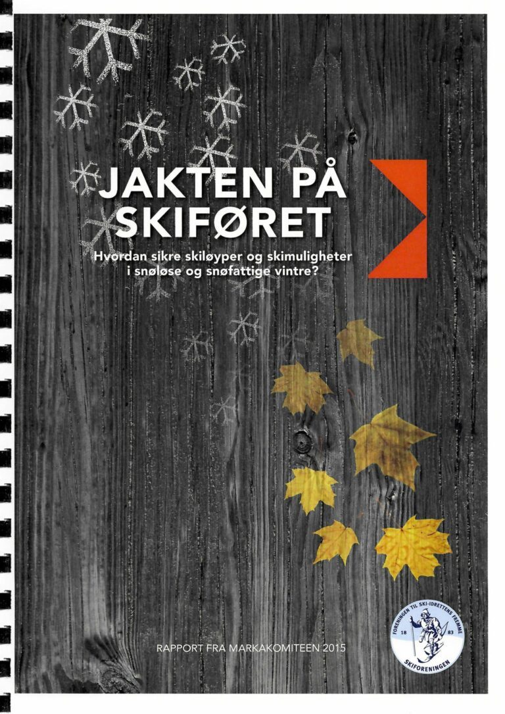
Jakten på skiføret. Hvordan sikre skiløyper og skimuligheter i snøløse og snøfattige vintre?
Almquist, Knut, Mathisen, Arne Fr. m.fl. · 2015
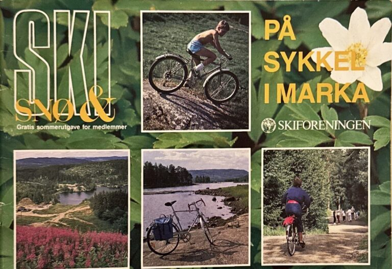
På sykkel i marka
Almquist, Knut (gen.sekr.) · 1990

Historien – DNT Årbok 2017
Alnæs, Karsten · 2017
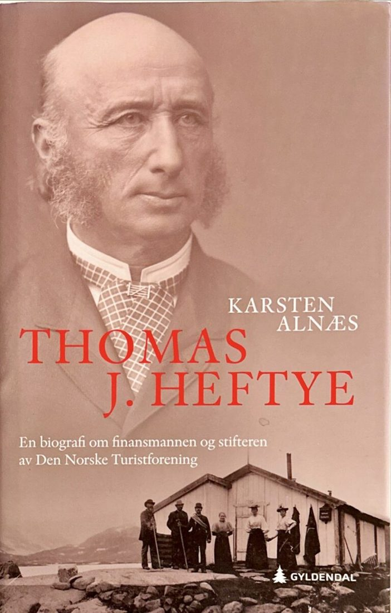
Thomas J. Heftye
Alnæs, Karsten · 2018
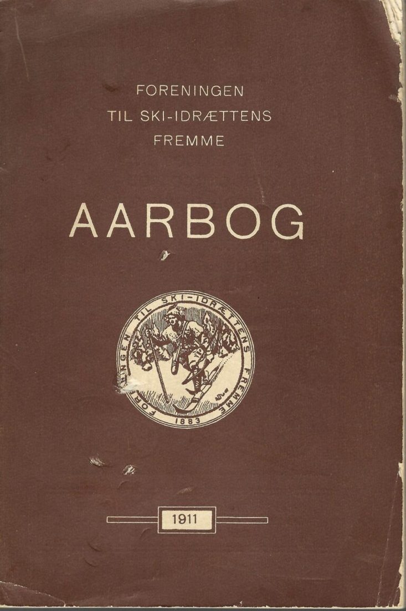
Skiforeningens – årbok 1911
Amundsen, K. Vilh. · 1911

Skiforeningens – årbok 1911
Amundsen, K. Vilh. · 1911
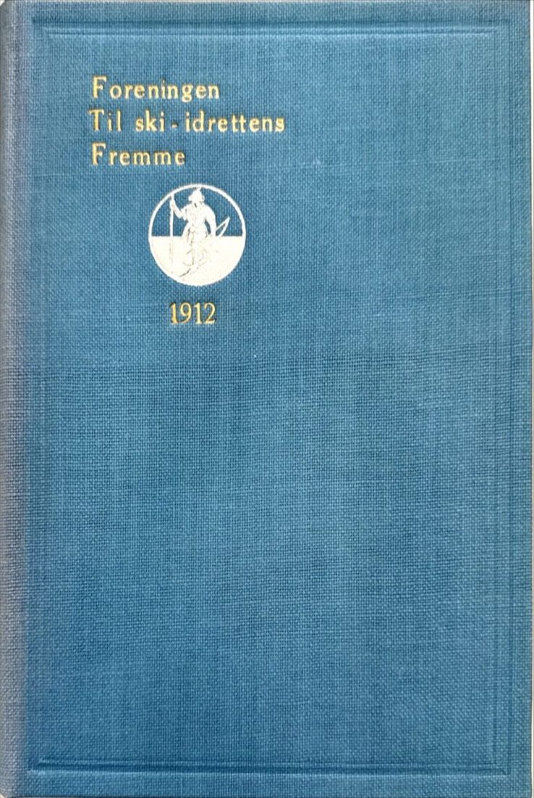
Skiforeningens – årbok 1912
Amundsen, K. Vilh. · 1912
Skiforeningens – årbok 1912
Amundsen, K. Vilh. · 1912
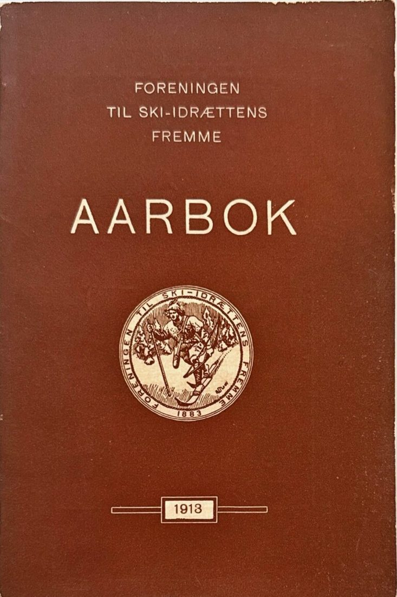
Skiforeningens – årbok 1913
Amundsen, K. Vilh. · 1913
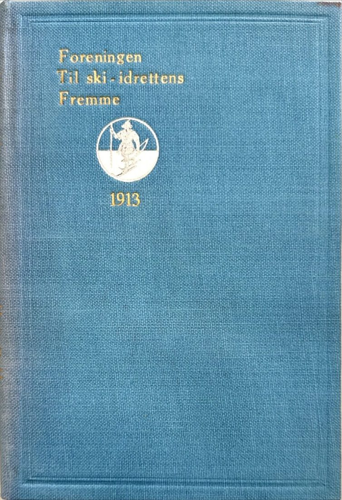
Skiforeningens – årbok 1913
Amundsen, K. Vilh. · 1913

Skiforeningens – årbok 1914
Amundsen, K. Vilh. · 1914
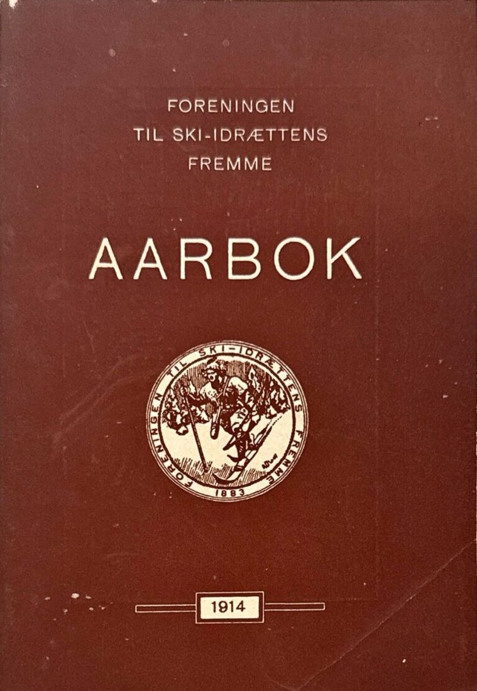
Skiforeningens – årbok 1914
Amundsen, K. Vilh. · 1914

Skiforeningens – årbok 1915
Amundsen, K. Vilh. · 1915
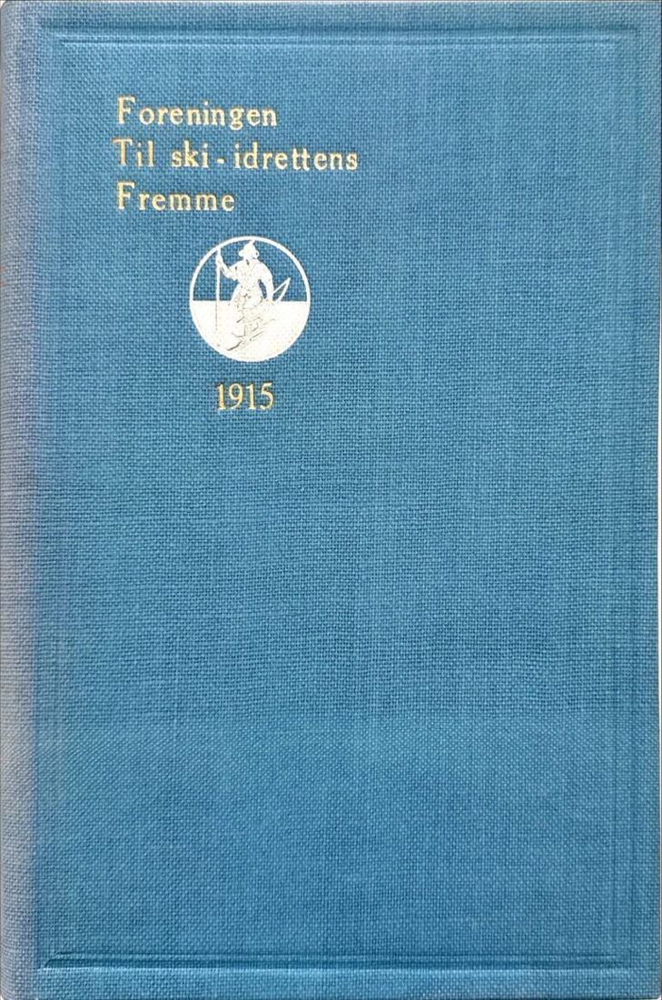
Skiforeningens – årbok 1915
Amundsen, K. Vilh. · 1915

Skiforeningens – årbok 1916
Amundsen, K. Vilh. · 1916

Skiforeningens – årbok 1916
Amundsen, K. Vilh. · 1916

Skiforeningens – årbok 1917
Amundsen, K. Vilh. · 1917
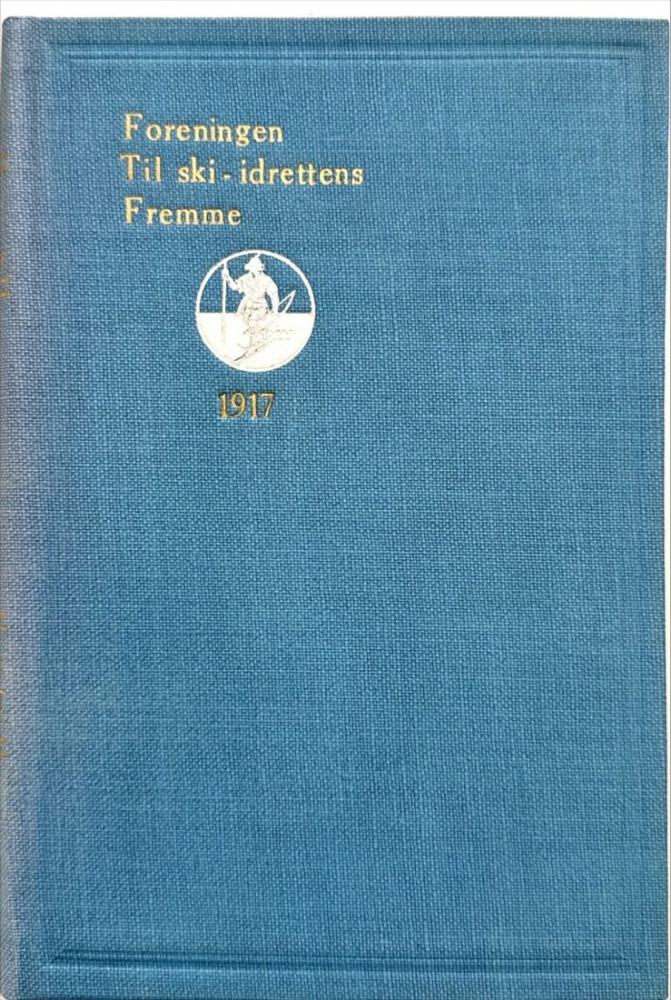
Skiforeningens – årbok 1917
Amundsen, K. Vilh. · 1917
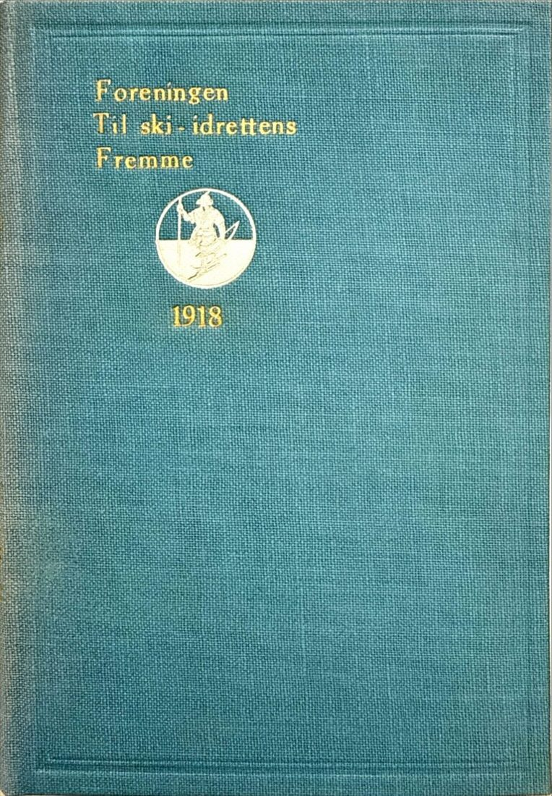
Skiforeningens – årbok 1918
Amundsen, K. Vilh. · 1918
Viser 24 av 889